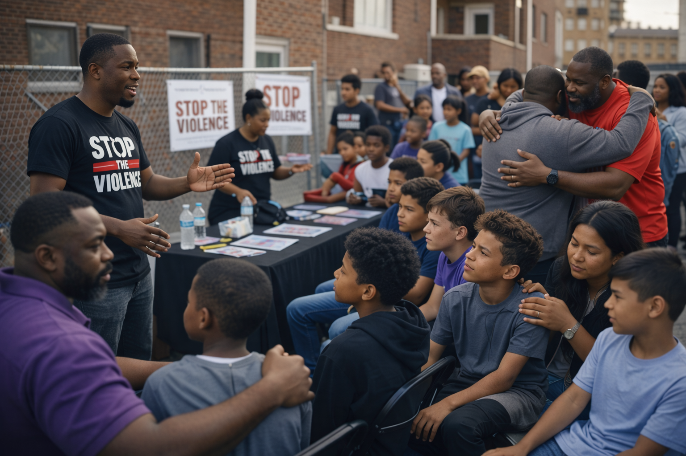
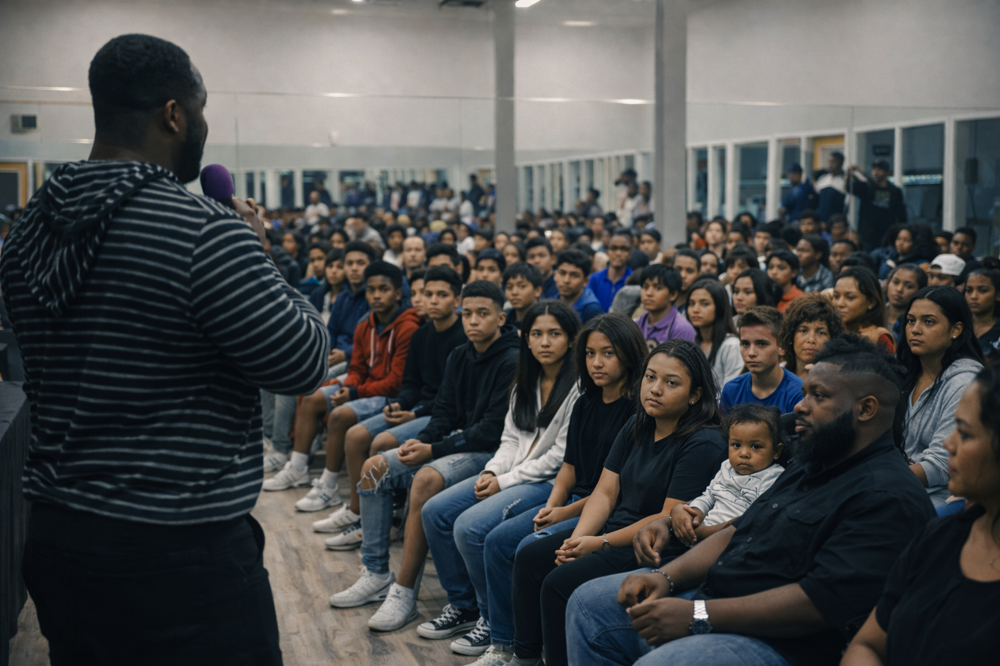
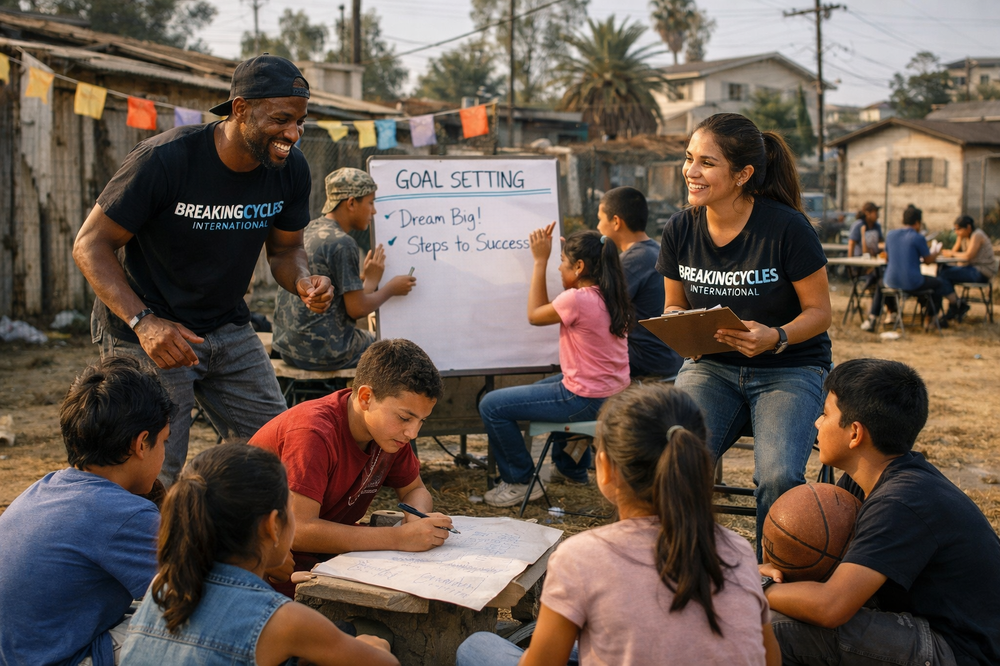
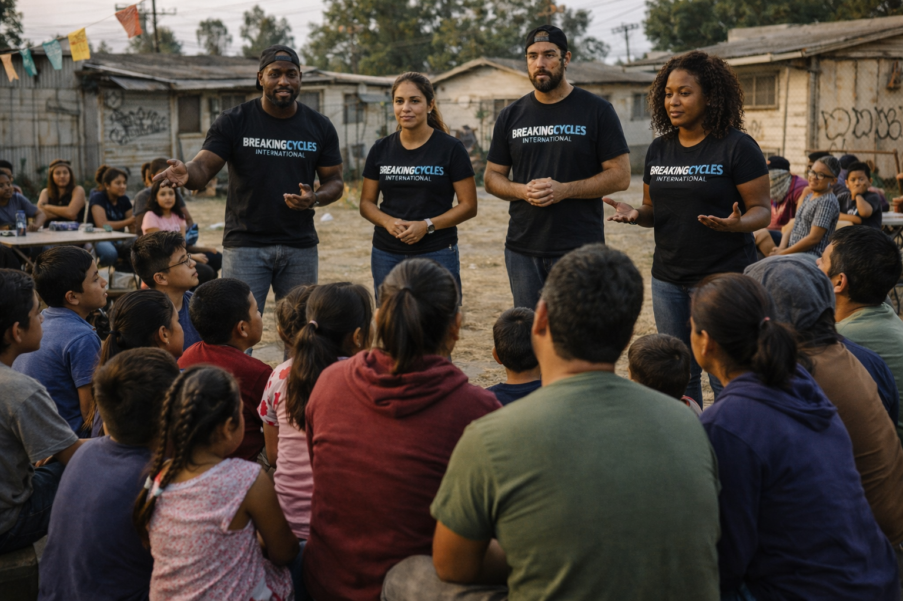
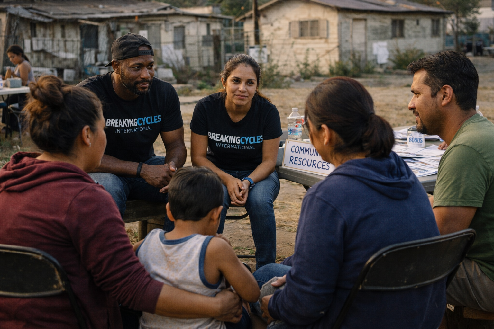
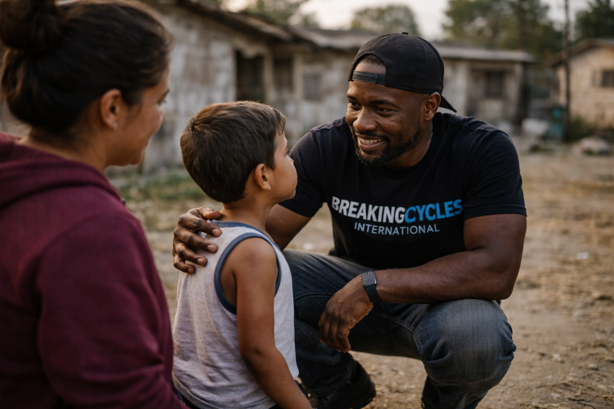

Mentorship
Guiding the Next Generation
Providing consistent mentorship and positive role models.
Providing consistent mentorship and positive role models.
Teaching communication and emotional intelligence skills.
Helping youth build spiritual and moral foundations.
Rooted in faith, we believe every young person is created with purpose, dignity, and the power to choose a better future.
“Over 500 youths reached this year”
Communities Reached
Meeting youth where they are and building safer futures together.


Youth Seminars Taught
Equipping the next generation with tools for peace, leadership, and purpose.



